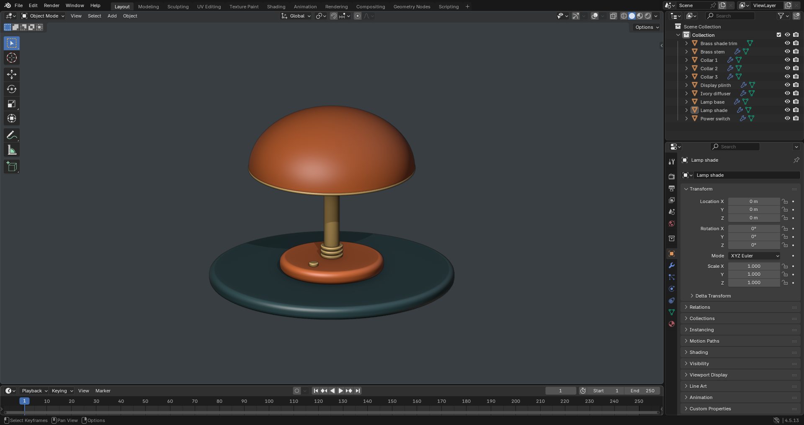
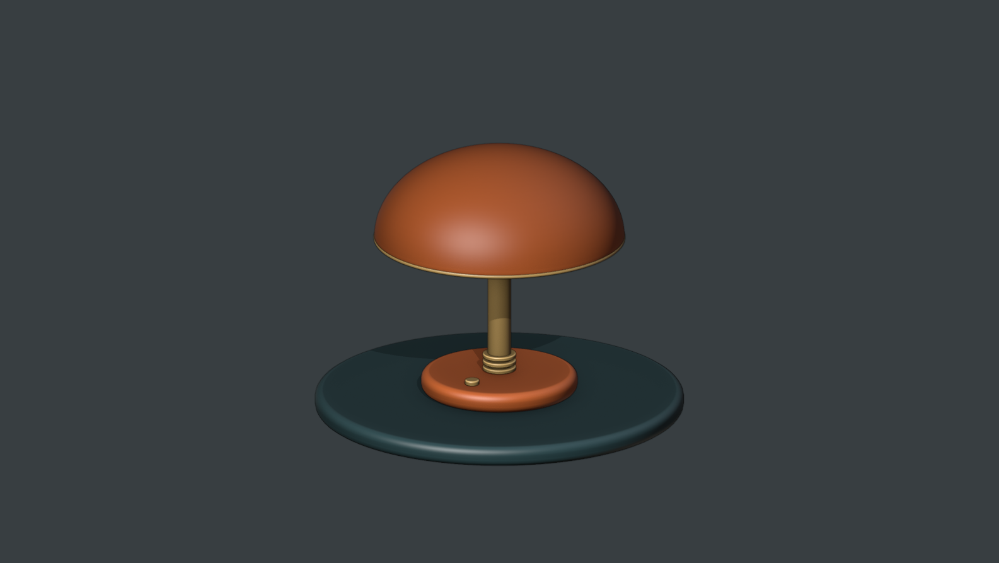

A command-line tool for Blender developers
Run Blender scripts
on a remote
Windows desktop.
Blender Box runs your Python scripts in Blender on a Windows machine you control. Start a run from your development checkout and get the script's JSON result and screenshots back in your project.
Requires your own Windows machine with Blender installed.
WHY USE IT?
Test each change on Windows from your development machine.
When you develop Blender scripts or add-ons on another machine, testing on Windows means copying files, starting Blender, checking the output, and cleaning up afterward. Blender Box automates those steps so you can rerun a test after each change.
You write the Python script and choose the assertions that define a passing test. Blender Box runs the script and collects its output.
A coding agent can use the same command-line workflow to run your tests and read their results.
How it works
- Choose what to run.
Provide a Python script, a JSON file listing the files and screenshots you need, and the connection settings for your Windows machine.
- Run it in Blender on Windows.
Blender Box copies only the listed files over SSH and runs your script in Blender. Blender opens in the logged-in Windows desktop, so you can capture its window as well as the scene pixels.
- Read the result in your project.
Your script prints its JSON result. Blender Box fetches it and the requested screenshots, checks the transferred files' hashes, then stops the Blender session it created.
00 / BEFORE YOU START
Build and test a studio desk lamp.
Build an orange desk lamp with a curved shade, brass stem, and display plinth. The script checks its geometry and materials, then Blender Box returns the JSON result and two screenshots before stopping its Blender session.
The test expects ten mesh objects, four materials, and 2,305 faces in the shade before modifiers. See the actual screenshots and result below.
Run the shell commands below on macOS or Linux. Before you start, prepare these requirements.
- A developer machineGo 1.23 or later, Git, and SSH.
- A Windows machine you controlOpenSSH, a host alias in your SSH config, and a user logged in to the desktop.
- Blender and its process managerInstall Blender and blendersessiond on Windows. This companion program starts and stops Blender for each test.
- A Windows work directoryCreate a directory for the runner and temporary test files, such as
C:\BlenderBox.
Blender Box's setup command installs its Windows runner. You must install Blender and blendersessiond separately and configure SSH access yourself.
-
Build the Windows runner
Clone Blender Box, then build its Windows executable. A later step copies this executable to your Windows machine so it can receive and run test requests.
SHELLDeveloper machinegit clone https://github.com/BramVR/blender-box.git cd blender-box GOOS=windows GOARCH=amd64 go build \ -o /tmp/blender-box.exe ./cmd/blender-boxThe commands in this guide use
go run ./cmd/blender-boxfrom this checkout. -
Configure the Windows connection
Create
target.jsonin the checkout. This target profile tells Blender Box which SSH connection to use and where to find Blender and the runner on Windows.Replace the example values with your settings.
ssh_aliasmust match an entry in your SSH config. The SSH user and the desktop user must resolve to the same Windows security identifier, or SID.target.jsonHost profile
{ "schema_version": 1, "ssh_alias": "owned-windows-host", "ssh_user": "HOST\\operator", "work_root": "C:\\BlenderBox", "interactive_user": "HOST\\operator", "task_name": "BlenderBoxHost", "blender_executable": "C:\\Program Files\\Blender Foundation\\Blender\\blender.exe", "session_broker_executable": "C:\\BlenderBox\\bin\\blendersessiond.exe", "host_executable": "C:\\BlenderBox\\bin\\blender-box.exe" }Keep connection details and SSH key paths in your SSH configuration. Do not put secrets in
target.json.Use an ASCII drive path without spaces for
work_root. Bothsession_broker_executableandhost_executablemust be in a dedicated directory below that root. Blender can be installed elsewhere. -
Install the runner on Windows
Blender needs to open in the logged-in desktop. Setup registers a Windows Scheduled Task for this because an SSH connection cannot launch an interactive Blender window directly.
Preview setup first. Without
--apply, this command checks your profile locally and makes no SSH connection.SHELLPreview · local onlygo run ./cmd/blender-box windows setup \ --target target.json \ --host-binary /tmp/blender-box.exe \ --jsonInstall the runner and Scheduled TaskWrites to Windows
After you verify the target settings, add
--applyto install the runner. Setup copies the executable, sets access permissions on its managed directories, checks that blendersessiond supports the required operations, and registers the Scheduled Task.go run ./cmd/blender-box windows setup \ --target target.json \ --host-binary /tmp/blender-box.exe \ --apply \ --jsonAfter installation, check that the Windows users, paths, programs, and Scheduled Task are configured correctly. This command reads host settings without changing them or launching Blender.
SHELLRead-only host checkgo run ./cmd/blender-box windows check \ --target target.json --jsonA failed requirement returns
status: "fail". Fix the reported problem before running the test. -
Create the script and file list
Blender Box calls a declared Blender workflow a Scenario. This Scenario has one Python script that builds the lamp and checks its parts, shade geometry, and material assignments.
Create
payload.jsonin your checkout. This Run Payload lists the files to copy, the script to execute, and the screenshots to collect. The example requests both a viewport image and a Blender window screenshot.payload.jsonSchema 2
{ "schema_version": 2, "files": [ { "source": "scenario.py", "destination": "scenario.py" } ], "scenario": { "script": "scenario.py", "read_timeout_seconds": 600, "capture_viewport": true, "capture_blender_window": true, "capture_desktop": false } }Create
scenario.pybesidepayload.jsonand copy in this script. For additional files, use source paths relative topayload.jsonand destination paths relative to the test's directory on Windows.Download scenario.py and save it beside your payload file, or copy the full script below. The script clears the fresh session's starting scene and builds the lamp from scratch. It uses Blender's solid studio view with material colors for the screenshots.
scenario.pyDesk lamp test · full script
The shade comes from a revolved profile, with thickness and bevel modifiers. Assertions check the part count, shade faces, material assignments, and positive wall thickness before printing the result.
"""Build and validate a desk lamp in the isolated Blender Box session.""" import json import math import bpy from mathutils import Vector # This scene belongs to the fresh session created for this Run. bpy.ops.object.select_all(action="SELECT") bpy.ops.object.delete(use_global=False) def material(name, color, metallic=0.0): mat = bpy.data.materials.new(name) mat.diffuse_color = (*color, 1) mat.use_nodes = True shader = mat.node_tree.nodes.get("Principled BSDF") shader.inputs["Base Color"].default_value = (*color, 1) shader.inputs["Metallic"].default_value = metallic shader.inputs["Roughness"].default_value = 0.28 return mat orange = material("Burnt orange enamel", (0.85, 0.19, 0.045), 0.25) brass = material("Brushed brass", (0.58, 0.36, 0.12), 0.8) cream = material("Warm ivory", (0.92, 0.82, 0.60)) charcoal = material("Deep teal", (0.045, 0.105, 0.115), 0.15) def finish(obj, name, mat, bevel=0.0): obj.name = name obj.data.materials.append(mat) for face in obj.data.polygons: face.use_smooth = True if bevel: mod = obj.modifiers.new("Soft edges", "BEVEL") mod.width = bevel mod.segments = 4 obj.modifiers.new("Weighted normals", "WEIGHTED_NORMAL") return obj def cylinder(name, radius, depth, z, mat, bevel=0.03): bpy.ops.mesh.primitive_cylinder_add( vertices=96, radius=radius, depth=depth, location=(0, 0, z) ) return finish(bpy.context.object, name, mat, bevel) plinth = cylinder("Display plinth", 1.65, 0.18, 0.09, charcoal, 0.07) base = cylinder("Lamp base", 0.70, 0.18, 0.27, orange, 0.07) stem = cylinder("Brass stem", 0.105, 1.34, 1.01, brass, 0.015) for index, z in enumerate((0.39, 0.45, 0.51), start=1): cylinder(f"Collar {index}", 0.15, 0.035, z, brass, 0.008) # Revolve a dome profile into a smooth, open lampshade. segments, rings = 96, 24 vertices = [] for row in range(rings + 1): angle = 0.025 + (math.pi / 2 - 0.025) * row / rings radius = 1.12 * math.sin(angle) z = 1.62 + 0.80 * math.cos(angle) for column in range(segments): turn = math.tau * column / segments vertices.append((radius * math.cos(turn), radius * math.sin(turn), z)) faces = [] for row in range(rings): for column in range(segments): a = row * segments + column b = row * segments + (column + 1) % segments faces.append((a, a + segments, b + segments, b)) faces.append(tuple(range(segments))) mesh = bpy.data.meshes.new("Revolved shade mesh") mesh.from_pydata(vertices, [], faces) mesh.update() shade = bpy.data.objects.new("Lamp shade", mesh) bpy.context.collection.objects.link(shade) finish(shade, "Lamp shade", orange) wall = shade.modifiers.new("Shade wall", "SOLIDIFY") wall.thickness = 0.045 rim = shade.modifiers.new("Rounded rim", "BEVEL") rim.width, rim.segments = 0.015, 3 cylinder("Ivory diffuser", 1.06, 0.025, 1.63, cream, 0.01) bpy.ops.mesh.primitive_torus_add( major_segments=96, minor_segments=16, location=(0, 0, 1.62), major_radius=1.105, minor_radius=0.022, ) finish(bpy.context.object, "Brass shade trim", brass) switch = cylinder("Power switch", 0.065, 0.045, 0.385, brass, 0.01) switch.location.y = -0.46 # Set a repeatable studio view for both requested captures. bpy.ops.object.select_all(action="DESELECT") bpy.context.view_layer.objects.active = shade view_target = Vector((0, 0, 1.20)) view_rotation = (Vector((5, -8, 4.4)) - view_target).to_track_quat("Z", "Y") for screen in bpy.data.screens: for area in screen.areas: if area.type == "VIEW_3D": space = area.spaces.active space.overlay.show_overlays = False space.show_gizmo = False space.shading.type = "SOLID" space.shading.light = "STUDIO" space.shading.color_type = "MATERIAL" space.shading.show_shadows = True space.shading.show_cavity = True space.shading.cavity_type = "BOTH" space.shading.curvature_ridge_factor = 1.3 space.shading.curvature_valley_factor = 1.0 space.shading.background_type = "VIEWPORT" space.shading.background_color = (0.035, 0.045, 0.05) space.region_3d.view_rotation = view_rotation space.region_3d.view_distance = 6.2 space.region_3d.view_location = view_target space.region_3d.view_perspective = "ORTHO" area.tag_redraw() # Assert scene properties that matter to this model. parts = [obj for obj in bpy.context.scene.objects if obj.type == "MESH"] assert len(parts) == 10, "Expected ten lamp and display parts" assert len(shade.data.polygons) == rings * segments + 1 assert shade.data.materials[0] == orange assert stem.data.materials[0] == brass assert wall.thickness > 0, "The shade needs a physical wall" assert all(value > 0 for value in base.dimensions) print(json.dumps({ "schema_version": 1, "status": "pass", "scene": "Studio desk lamp", "mesh_objects": len(parts), "shade_faces": len(shade.data.polygons), "materials": len({slot.name for obj in parts for slot in obj.data.materials}), }))SCRIPT OUTPUTPrint exactly one JSON document with
schema_version: 1andstatus: "pass"after your assertions pass. Extra text on stdout makes the result invalid. Returning a dictionary from a function is not enough; the script must print it. Read the result format ↗Check the files and configuration locally with
plan. Then rundoctorto confirm that the Windows installation supports the requested screenshots.SHELLPlan, then diagnosego run ./cmd/blender-box plan \ --target target.json --payload payload.json --json go run ./cmd/blender-box doctor \ --target target.json --payload payload.json --jsonplandoes not contact Windows.doctorconnects to Windows but does not change settings or launch Blender. This schema 2 example requires a Windows runner built from the matching source version. -
Run the lamp test
One execution of a Scenario is a Run, identified by a unique Run ID. Start this example with a 20-minute timeout.
SHELLLaunches Blender on your hostgo run ./cmd/blender-box run \ --target target.json \ --payload payload.json \ --timeout 20m \ --jsonThe command prints
RUN_ID=bbx_...to stderr before it starts work. Save this ID so you can check or stop the test if the connection drops. With--json, stdout contains one JSON success or failure result.Copy filesRun scriptFetch resultsStop BlenderOn success, open
result/scenario-result.jsonin the run's local results directory. It reports"mesh_objects": 10,"shade_faces": 2305, and"materials": 4. Thescreenshotsdirectory contains the viewport and Blender window images.Blender Box checks the transferred files before stopping the Blender session it created and removing that run's temporary Windows files.
-
Check or stop a run
If the connection drops, use
statusto read the run's saved state on Windows. Replacebbx_...with the Run ID you saved.SHELLCheck the saved run statego run ./cmd/blender-box status \ --target target.json --run bbx_... --jsonTo stop an active run, pass the same ID to
stop.SHELLStop this run's Blender sessiongo run ./cmd/blender-box stop \ --target target.json --run bbx_... --jsonThe saved run state identifies the Blender session that Blender Box created.
stopuses that recorded identity, so it cannot stop an unrelated Blender window by matching its process name or port.
07 / RESULTS
The model, the Blender window, and the result.
These are real captures from the desk lamp test above, run with Blender Box on Windows in Blender 4.5.13. Both images and the JSON came from the same run. Open either image to inspect it at full size.
{kind=link}

bpy.ops.screen.screenshot.{kind=link}

{
"schema_version": 1,
"status": "pass",
"scene": "Studio desk lamp",
"mesh_objects": 10,
"shade_faces": 2305,
"materials": 4
}Original, unedited captures. File hashes verified; Blender session stopped and run files cleaned up. View capture provenance ↗
Find these files in your project.
After a successful run, Blender Box saves the run's files in a new directory in your checkout. This Evidence Bundle contains the script's JSON result, requested screenshots, file checksums, and a record of whether cleanup completed.
artifacts/blender-box/<run-id>/
Use --evidence-dir to choose another new directory. Blender Box never replaces an existing evidence file.
SUCCESSFUL RUNWHAT EACH FILE TELLS YOU
- manifest.json
- The returned files, their sizes and SHA-256 hashes, and how each screenshot was captured.
- evidence.json
- The run and Blender session IDs, deadline, final state, and cleanup result.
- result/scenario-result.json
- The JSON printed by your script. The lamp example reports its part, face, and material counts.
- screenshots/viewport.png
- An image of the Blender scene. Included when requested.
- screenshots/blender-window.png
- The full Blender window, including its controls and panels. Included when requested.
- screenshots/desktop.png
- The Windows desktop across its displays. Collected only when you enable desktop capture.
Use a viewport image to inspect the scene. Use a Blender window screenshot to check an add-on's controls or panels. Desktop capture is off by default because it can include other applications and private information. Review those images before sharing.
COMMON QUESTIONS
Blender Box FAQ
Requirements, remote testing, and what to expect from a run.
What is Blender Box?
Blender Box is a command-line tool for running Python scripts in Blender on a Windows machine you control. It copies declared files over SSH, starts Blender in the logged-in desktop, and returns the script's JSON result and requested screenshots to your development checkout.
Who is Blender Box for?
It is for developers testing Blender scripts and add-ons on Windows, including developers working from macOS or Linux. You write the test script and its assertions. Blender Box handles the remote run, file transfer, screenshots, and cleanup.
Does Blender Box run Blender headlessly?
No. Blender opens in a logged-in Windows desktop through a Scheduled Task. This lets a test capture the Blender window and its controls as well as viewport imagery. Blender Box requires an interactive Windows user session.
What do I need to run it?
You need Go 1.23 or later, Git, and SSH on your development machine. The Windows host needs OpenSSH, Blender, compatible blendersessiond, a work directory, and a logged-in desktop user. The SSH account and Scheduled Task user must resolve to the same Windows security identifier. Blender Box setup installs the runner; it does not install Blender or blendersessiond.
Is Tailscale required?
No. Blender Box connects through an SSH configuration alias. Tailscale can provide private network access, but a LAN, another VPN, or a bastion can provide that access too. The Blender MCP add-on stays on Windows loopback and is not exposed or forwarded.
Can a coding agent use Blender Box?
Yes. A coding agent can invoke the same CLI, use --json for structured command results, and read the returned test result and screenshots. Your Scenario script defines what a passing test means. Blender Box does not write the test or provide a built-in AI model.
What comes back after a successful test?
A successful run returns an Evidence Bundle under artifacts/blender-box/<run-id>/ by default. It contains the script's JSON result, requested screenshots, file hashes, run and session identities, and cleanup facts. Viewport, Blender-window, and Windows-desktop captures are distinct. Desktop capture is opt-in.
What happens if the SSH connection drops?
Save the Run ID printed when the run starts. Use the status command to read the saved run state on Windows, or stop with that Run ID to stop the Blender session owned by the run. Blender Box uses the recorded session identity instead of matching unrelated Blender processes by name.
Need a command or its flags? Open the command reference.